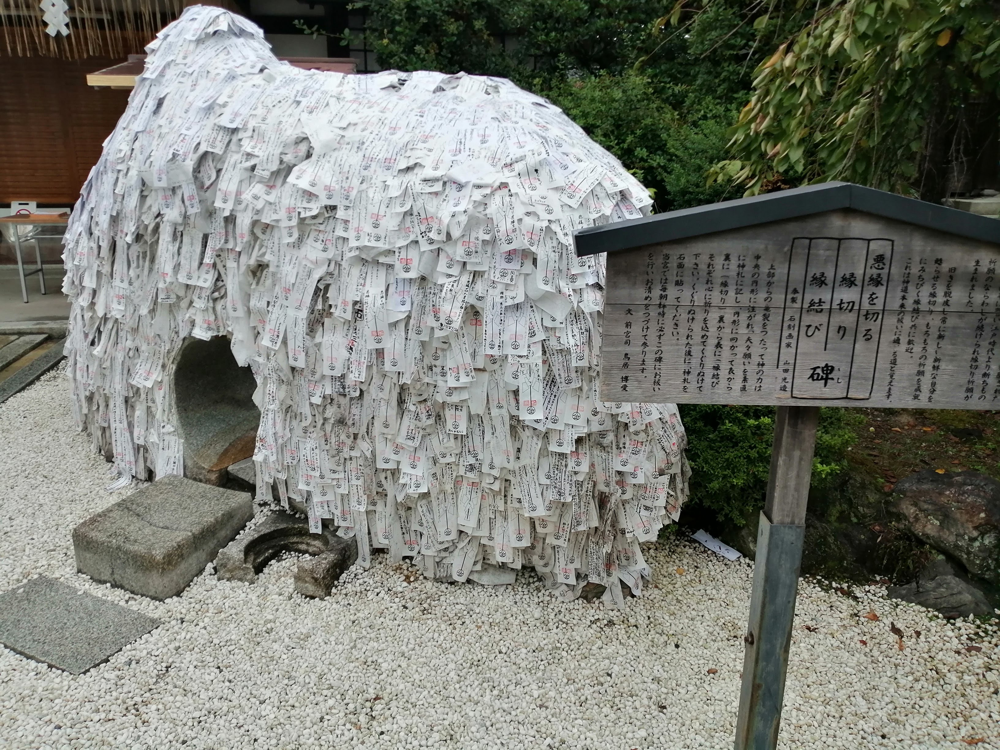

京都へGotoでごーとぅした話
賑わっているのか、どうなっているのかよくわからないGotoキャンペーンを利用して京都へ行ってまいりました。 ほんとは、JR東海ツアーズの新幹線付きのプランを利用したかった（これほんと安い）のですが、 1人大好きマンはお帰りくださいということでした。ぼっちにやさしくない世界ですね。 トップの画像は御金神社、建仁寺の双龍図、禅林寺です。ではでは、印象深かったところをいろいろ紹介していきます。
初日
初日は朝５時に京都駅八条口に到着したため、いつでもあいてる御金神社にいきました。 その後、護王神社に向かったあと建仁寺で座禅体験しに祇園四条方面に向かいましたが、コロナ禍の影響でやっておらず。 路頭に迷い、とりあえず安井金比羅宮へ。悪い縁を絶ち、良縁を得るということで評判の神社です。 装著ということも有り人も少なかったため、縁切り碑の穴をくぐってきました。 自分の前におじさまが通っておりましたが、彼も私も女性がいたら通れんかった。 
さらに彷徨い歩き、小野篁が祀られている六道珍皇寺へ。 冥界と現世の境目と言われているだけあり、独特の雰囲気でした。 Saganというカフェでモーニングのセットを食べた後、六波羅蜜寺に向かいました。 奥のほうの宝物庫を拝観しましたが、どれも今にも動きそうですごい迫力でした。
そして、座禅したかった建仁寺へ向かいました。ここは、双竜図と風神雷神図が有名みたいですね。 自分的には、庭園がとても良かった。苔の庭も枯山水で自分を落ち着け、対話する感じがとても良い。 続いて、気まぐれで入った霊源寺。ここが今回一番すごかった。正直、ぶっちぎり優勝ですね。 和尚さんが全部案内していただいて、語り口調も軽快で面白い。 展示品も超機嫌がいいときの織田信長の直筆の手紙、仏像in仏像のところにあったお釈迦様の骨、なんかすごい庭園... そっくりらしい一休さんの掛け軸、うん、てんこ盛り。もう一回いきたかった。 庭園にあるインドをイメージした橙の石にも座ることができて、他にはないことも体験できたので、本当にこの寺は良かった。
そして、東へてくてく歩いて、高台寺や知恩院を見ておばんざいを食べて比較的普通な散歩をしました。 そしてバスで南禅寺、禅林寺方面へ。